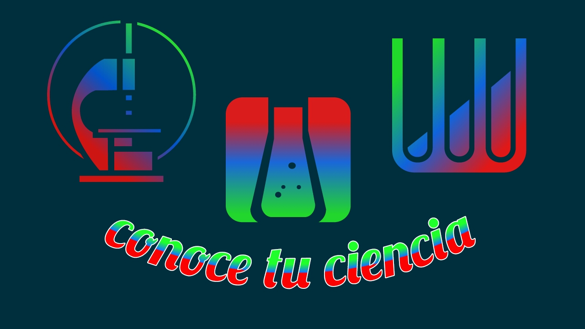
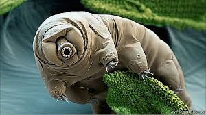
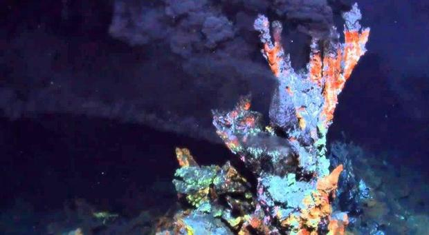
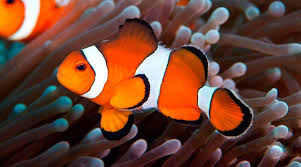
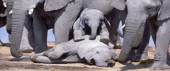
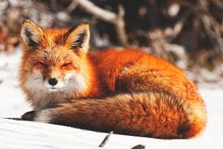

Aqui veras datos cientificos curiosos e interesantes.
¿El ser vivo indestructible?

Se les llama ositos de agua, pero además de su aspecto, en realidad los tardígrados no
tienen nada de tiernos. De hecho son una de las criaturas más resistentes del planeta Tierra:
pueden sobrevivir en el espacio (toleran temperaturas de -272 grados centígrados), pueden
vivir bajo presiones extremas, como las encontradas en los océanos más profundos, y pueden
sobrevivir durante decenios sin agua.
¿El primer organismo?

En los últimos días se determinó que LUCA («Last Ultimate Common Ancestor» o en
español: el último antepasado común) es el organismo del que descendemos todos los
seres vivos de la Tierra. A partir de allí, los investigadores han tratado de determinar
las características de este ser excepcional y propagar la vida tal y como la
conocemos.
¿El animal que cambia de sexo?

El cambio de sexo del pez payaso, de macho a hembra, se produce cuando muere el ejemplar hembra
y comienza a experimentar cambios neuronales que, finalmente, conducen a la transformación de los
testículos en ovarios.
¿Los elefantes tambien tienen sentimientos?

La capacidad del elefante para la tristeza y la pena es verdaderamente única entre los miembros
del mundo animal. Mientras que la mayoría de los animales no dudan en dejar a los débiles y
jóvenes atrás para morir, los elefantes están angustiados por la situación, y continúan
mostrando signos de esta pena durante largos períodos de tiempo.
¿Los zorros ladran?

Los zorros no se comunican ladrando como lo hacen otros caninos, por el contrario, se basan
exclusivamente en la comunicación no verbal. Esto incluye características singulares en la postura
del cuerpo, el movimiento de sus colas, y sus expresiones faciales. Algunas de sus comunicaciones
verbales incluyen gritos, y los mismos suenan como gritos de los humanos.